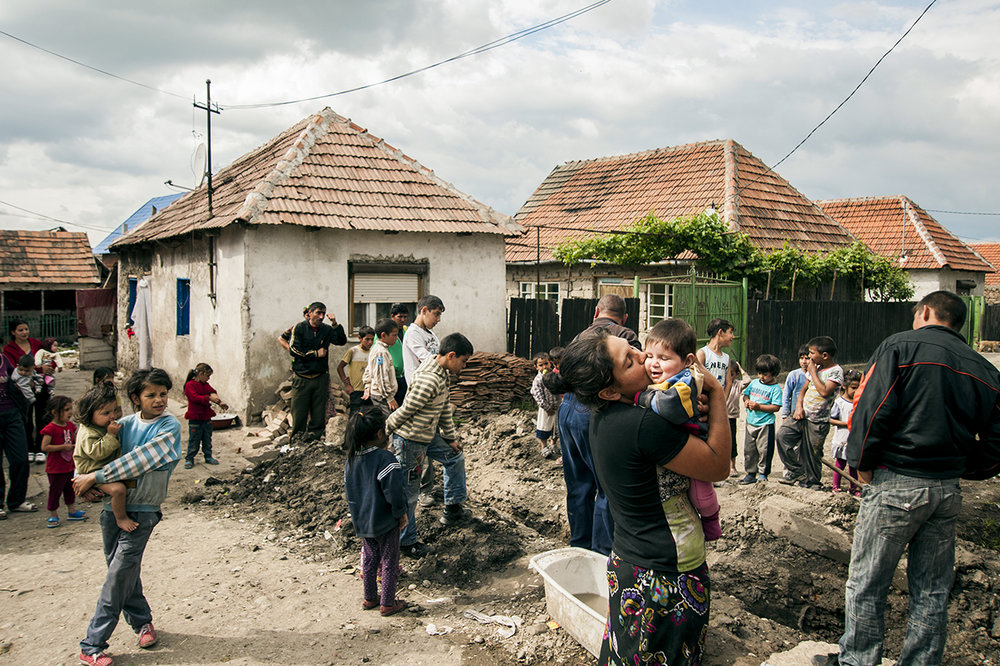

Design Challenge
The first step was to determine the design problem. Using the IDEO design challenge template, a more refined problem was found.
The first step was to determine the design problem. Using the IDEO design challenge template, a more refined problem was found.
After conducting the preliminary research, the target audience and the goals best suited to meet the needs of such groups defined.